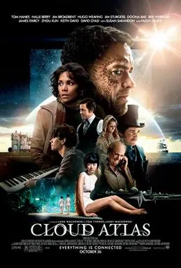

The genetics
Genetics appears in only one of the film's six stories, but it is the one at its centre. In twenty-second-century Neo Seoul, fabricants are humanoid clones produced as an indentured workforce, and Sonmi-451 discovers that they are eventually recycled into the food that keeps the others docile. Sonmi-451's awakening and rebellion make her the founding figure of a later religion, and her story is the film's strongest statement against treating people as manufactured goods. The scientists and corporate leaders behind the system remain in the background; the film is concerned with the consequences of a society that classifies some humans as products. The fabricants are not a portrait of real cloning, which produces ordinary individuals rather than a servile caste; the story belongs to the tradition of dystopias in which manufactured people are treated as property.
The story
The film interweaves six stories set in different eras, with the same actors playing different roles in each, suggesting souls connected across time. In 1849, an American lawyer befriends an escaped Moriori slave and becomes an abolitionist; in 1936, a young composer writes the "Cloud Atlas Sextet" for an ageing master; in 1973, a journalist uncovers a conspiracy at a nuclear power plant; in 2012, an elderly publisher is trapped in a nursing home. In Neo Seoul in 2144, Sonmi-451 is a "fabricant", a cloned human bred to work as a fast-food server. Rescued by a rebel, she learns that fabricants are recycled into the food that keeps the others docile, broadcasts the truth and is executed. In 2321, after a collapse of civilisation, the tribesmen of Hawaii worship Sonmi as a goddess, and a goatherd guides a woman from a technologically advanced people to a communication station.